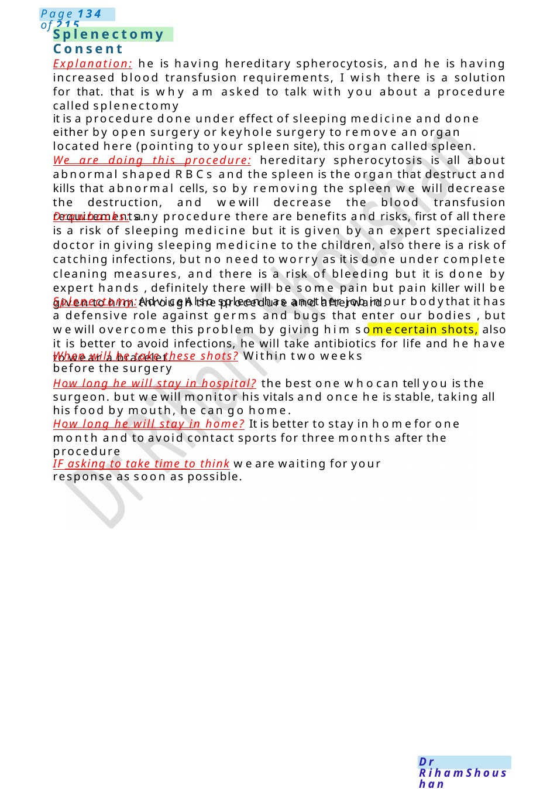
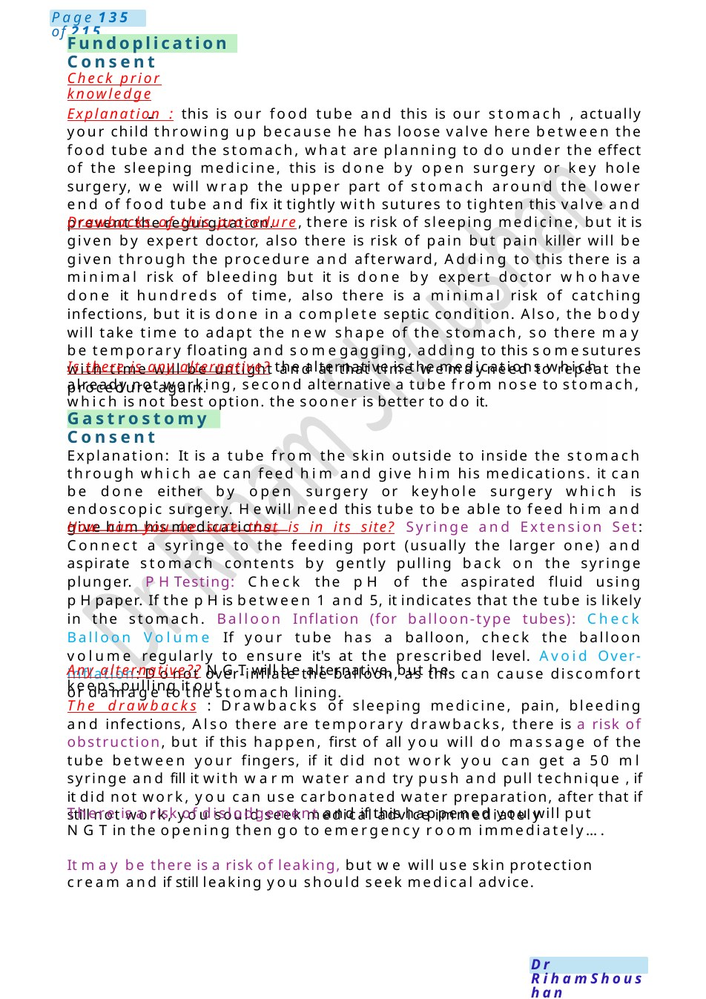

Splenectomy Consent
Explanation: he is having hereditary spherocytosis, and he is having increased blood transfusion requirements, I wish there is a solution for that. that is why am asked to talk with you about a procedure called splenectomy it is a procedure done under effect of sleeping medicine and done either by open surgery or keyhole surgery to remove an organ located here (pointing to your spleen site), this organ called spleen.
Scenario Summary
Explanation: he is having hereditary spherocytosis, and he is having increased blood transfusion requirements, I wish there is a solution for that. that is why am asked to talk with you about a procedure called splenectomy it is a procedure done under effect of sleeping medicine and done either by open surgery or keyhole surgery to remove an organ located here (pointing to your spleen site), this organ called spleen.
Full Original Scenario

Splenectomy Consent
Explanation: he is having hereditary spherocytosis, and he is having increased blood transfusion requirements, I wish there is a solution for that. that is why am asked to talk with you about a procedure called splenectomy
it is a procedure done under effect of sleeping medicine and done either by open surgery or keyhole surgery to remove an organ located here (pointing to your spleen site), this organ called spleen.
We are doing this procedure: hereditary spherocytosis is all about abnormal shaped RBCs and the spleen is the organ that destruct and kills that abnormal cells, so by removing the spleen we will decrease the destruction, and wewill decrease the blood transfusion requirements.
Drawbacks: any procedure there are benefits and risks, first of all there is a risk of sleeping medicine but it is given by an expert specialized doctor in giving sleeping medicine to the children, also there is a risk of catching infections, but no need to worry as it is done under complete cleaning measures, and there is a risk of bleeding but it is done by expert hands , definitely there will be some pain but pain killer will be given to him through the procedure and afterward.
Splenectomy:Advice Also spleen has another job in our bodythat it has a defensive role against germs and bugs that enter our bodies , but wewill overcome this problem by giving him somecertain shots, also it is better to avoid infections, he will take antibiotics for life and he have to wear a bracelet.
When will he take these shots? Within two weeks before the surgery
How long he will stay in hospital? the best one whocan tell you is the surgeon. but wewill monitor his vitals and once he is stable, taking all his food by mouth, he can go home.
How long he will stay in home? It is better to stay in homefor one month and to avoid contact sports for three months after the procedure
IF asking to take time to think we are waiting for your response as soon as possible.

Fundoplication Consent
Gastrostomy Consent
Check prior knowledge
Explanation : this is our food tube and this is our stomach , actually your child throwing up because he has loose valve here between the food tube and the stomach, what are planning to do under the effect of the sleeping medicine, this is done by open surgery or key hole surgery, we will wrap the upper part of stomach around the lower end of food tube and fix it tightly with sutures to tighten this valve and prevent the regurgitation.
Drawbacks of this procedure, there is risk of sleeping medicine, but it is given by expert doctor, also there is risk of pain but pain killer will be given through the procedure and afterward, Adding to this there is a minimal risk of bleeding but it is done by expert doctor whohave done it hundreds of time, also there is a minimal risk of catching infections, but it is done in a complete septic condition. Also, the body will take time to adapt the new shape of the stomach, so there may be temporary floating and somegagging, adding to this somesutures with time will be untight and at that time wemayneed to repeat the procedure again.
Is there is any alternative? the alternative is the medications which already not working, second alternative a tube from nose to stomach, which is not best option. the sooner is better to do it.
Explanation: It is a tube from the skin outside to inside the stomach through which ae can feed him and give him his medications. it can be done either by open surgery or keyhole surgery which is endoscopic surgery. Hewill need this tube to be able to feed him and give him his medications.
How can you be sure that is in its site? Syringe and Extension Set: Connect a syringe to the feeding port (usually the larger one) and aspirate stomach contents by gently pulling back on the syringe plunger. PHTesting: Check the pH of the aspirated fluid using p Hpaper. If the p His between 1 and 5, it indicates that the tube is likely in the stomach. Balloon Inflation (for balloon-type tubes): Check Balloon Volume If your tube has a balloon, check the balloon volume regularly to ensure it's at the prescribed level. Avoid Over-inflation: Donot over-inflate the balloon, as this can cause discomfort or damage to the stomach lining.
Any alternative?? NGTwill be alternative, but he keeps pulling it out
The drawbacks : Drawbacks of sleeping medicine, pain, bleeding and infections, Also there are temporary drawbacks, there is a risk of obstruction, but if this happen, first of all you will do massage of the tube between your fingers, if it did not work you can get a 50 ml syringe and fill it with warm water and try push and pull technique , if it did not work, you can use carbonated water preparation, after that if still not work, you sould seek medical advice immediately
There is a risk of dislodgement and if this happened you will put NGTin the opening then go to emergency room immediately....
It may be there is a risk of leaking, but we will use skin protection cream and if still leaking you should seek medical advice.